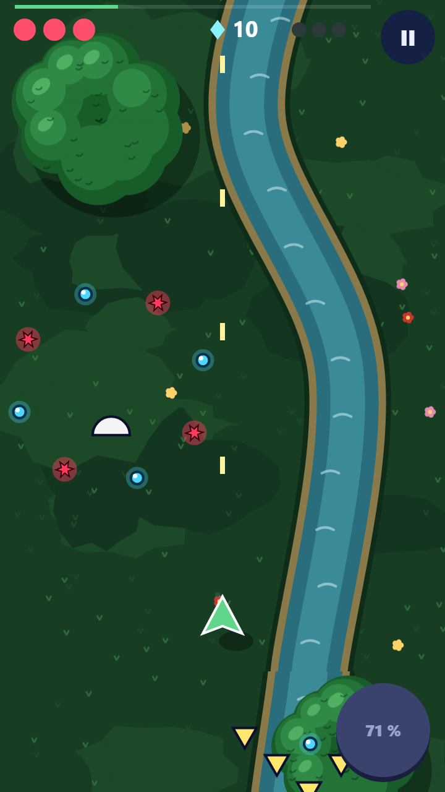
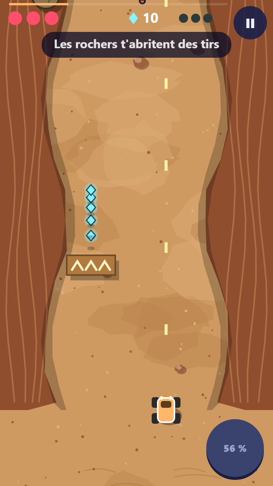

<title>Star Patrol en 16 bits</title>
<meta name="claude:viewport-fit-sides" content="cover">
<link rel="preconnect" href="https://fonts.googleapis.com">
<link rel="stylesheet" href="https://fonts.googleapis.com/css2?family=Press+Start+2P&family=Andika:wght@400;700&display=swap">
<style>
/* Planche sombre par choix (un écran de console). Pour chaque planète : le jeu
   d'aujourd'hui, puis la même scène en pixel art 16 bits, dans l'esprit de
   A Link to the Past : dessinée à 120 × 213 points puis agrandie 3 fois, sans lissage. */
:root {
  color-scheme: dark;
  --fond: #14121c;
  --carte: #221e2e;
  --texte: #f2ead8;
  --doux: #b7aec8;
  --or: #f8d840;
  --pixel: "Press Start 2P", ui-monospace, monospace;
  --corps: "Andika", system-ui, sans-serif;
}
body { background: var(--fond); color: var(--texte); font-family: var(--corps); font-size: 17px; line-height: 1.5; }
main { max-width: 1240px; margin: 0 auto; padding-block: 28px 56px; padding-left: max(16px, env(safe-area-inset-left, 0px)); padding-right: max(16px, env(safe-area-inset-right, 0px)); display: grid; gap: 32px; }
h1 { font-family: var(--pixel); font-size: clamp(18px, 3.6vw, 28px); line-height: 1.5; margin: 0; color: var(--or); }
h2 { font-family: var(--pixel); font-size: 15px; margin: 0; }
p { margin: 0; max-width: 66ch; color: var(--doux); }
.planete { display: grid; gap: 14px; }
.duo { display: flex; flex-wrap: wrap; gap: 24px; }
figure { margin: 0; display: grid; gap: 8px; justify-items: center; width: min(320px, 100%); }
.ecran { width: 100%; aspect-ratio: 360 / 640; border: 4px solid #000; border-radius: 18px; overflow: hidden; background: #000; box-shadow: 0 0 0 3px #3a3448; }
.ecran canvas, .ecran img { display: block; width: 100%; height: 100%; image-rendering: pixelated; }
figcaption { font-size: 15px; color: var(--doux); text-align: center; }
figcaption b { color: var(--texte); display: block; font-family: var(--pixel); font-size: 11px; margin-bottom: 4px; }
</style>

<main>
  <header style="display:grid;gap:10px">
    <h1>Star Patrol en 16 bits</h1>
    <p>Maquette d'un autre style pour les deux planètes, dans l'esprit de <i>A Link to the Past</i> (Super Nintendo) : de gros pixels, des contours noirs, des arbres en houppiers ronds, un sable pointillé et des falaises en terrasses. Les dessins sont les nôtres : aucun sprite du jeu n'est recopié.</p>
  </header>

  <section class="planete">
    <h2>Jungle : mission 3, « La rivière »</h2>
    <div class="duo">
      <figure><div class="ecran"></div><figcaption><b>Aujourd'hui</b>Le sol peint, les ennemis en formes simples</figcaption></figure>
      <figure><div class="ecran"><canvas id="jungle" width="360" height="640" aria-label="La même mission en pixel art 16 bits"></canvas></div><figcaption><b>En 16 bits</b>Houppiers ronds, rivière à reflets, souches et herbe haute</figcaption></figure>
    </div>
  </section>
  <section class="planete">
    <h2>Désert : mission 3, « Le canyon »</h2>
    <div class="duo">
      <figure><div class="ecran"></div><figcaption><b>Aujourd'hui</b>Le sol peint, le rover et les rochers</figcaption></figure>
      <figure><div class="ecran"><canvas id="desert" width="360" height="640" aria-label="La même mission du Désert en pixel art 16 bits"></canvas></div><figcaption><b>En 16 bits</b>Sable pointillé, falaises en terrasses, ossements</figcaption></figure>
    </div>
  </section>
  <p style="font-size:15px">Ce que ce style change : tout se dessine en petits carrés, à la main, et les mouvements se font par images (deux ou trois par animation). Ça rend le jeu très lisible, mais c'est un vrai chantier : chaque ennemi, chaque arme et chaque décor sont à redessiner.</p>
</main>

<script>
// ---------- outils ----------
const LW = 120, LH = 213; // la résolution « console » : agrandie 3 fois à l'écran
function hasard(g) { let a = g >>> 0; return () => { a = (a + 0x6D2B79F5) >>> 0; let t = a; t = Math.imul(t ^ (t >>> 15), t | 1); t ^= t + Math.imul(t ^ (t >>> 7), t | 61); return ((t ^ (t >>> 14)) >>> 0) / 4294967296; }; }
const px = (x, c, X, Y) => { x.fillStyle = c; x.fillRect(Math.round(X), Math.round(Y), 1, 1); };
const rect = (x, c, X, Y, w, h) => { x.fillStyle = c; x.fillRect(Math.round(X), Math.round(Y), w, h); };
// Un sprite écrit en lettres : chaque lettre est une couleur de la palette, « . » est transparent
function sprite(x, lignes, pal, X, Y) {
  lignes.forEach((l, j) => [...l].forEach((ch, i) => { if (ch !== '.') px(x, pal[ch], X + i, Y + j); }));
}
// Un disque pixelisé avec contour, ombre en bas à droite et reflets en haut à gauche
function boule(x, cx, cy, r, c) {
  for (let j = -r - 1; j <= r + 1; j++) for (let i = -r - 1; i <= r + 1; i++) {
    const d = Math.hypot(i, j);
    if (d > r + 0.5) continue;
    let col = c.mid;
    if (d > r - 0.6) col = c.trait;
    else if (i + j > r * 0.55) col = c.ombre;
    else if (i + j < -r * 0.6 && (i * 3 + j * 5) % 4 !== 0) col = c.clair;
    px(x, col, cx + i, cy + j);
  }
}
// Un houppier en écailles, comme les arbres de la forêt perdue : des petites boules collées
function arbre(x, r, cx, cy, R, c) {
  for (let j = -R; j <= R; j++) for (let i = -R; i <= R; i++) if (Math.hypot(i, j * 1.1) <= R) px(x, 'rgba(0,0,0,.25)', cx + i + 3, cy + j + 4); // l'ombre portée, ronde
  const lobes = [[0, 0, R - 2]]; for (let k = 0; k < 7; k++) { const a = k / 7 * Math.PI * 2; lobes.push([Math.round(Math.cos(a) * R * 0.55), Math.round(Math.sin(a) * R * 0.55), Math.round(R * 0.5)]); }
  for (const [dx, dy, rr] of lobes) boule(x, cx + dx, cy + dy, rr, c);
  for (const [dx, dy, rr] of lobes.slice(1)) if (dx + dy < 0) { px(x, c.clair, cx + dx - 1, cy + dy - 1); px(x, c.clair, cx + dx, cy + dy - 1); }
}
// Le texte s'écrit APRÈS l'agrandissement, à la taille finale : écrit en 8 px puis agrandi, il était flou
let TEXTES = [];
function texteBitmap(x, t, X, Y, c) { TEXTES.push([t, X, Y, c]); }
function agrandir(id, dessiner) {
  const bas = document.createElement('canvas'); bas.width = LW; bas.height = LH;
  const x = bas.getContext('2d'); TEXTES = []; dessiner(x);
  const c = document.getElementById(id), DPR = Math.min(2, devicePixelRatio || 1);
  c.width = 360 * DPR; c.height = 640 * DPR;
  const y = c.getContext('2d'); y.imageSmoothingEnabled = false;
  y.drawImage(bas, 0, 0, LW, LH, 0, 0, c.width, c.height);
  const k = c.width / LW;
  y.font = Math.round(7 * k) + 'px "Press Start 2P"'; y.textBaseline = 'top';
  for (const [t, X, Y, col] of TEXTES) { y.fillStyle = '#000'; y.fillText(t, X * k + k, Y * k + k); y.fillStyle = col; y.fillText(t, X * k, Y * k); }
}

// ---------- sprites (nos dessins) ----------
const NOIR = '#000000';
const AVION = { pal: { k: NOIR, v: '#58d070', V: '#a8f0b0', o: '#287838', w: '#ffffff', b: '#2850c0', y: '#f8d840' },
  l: ['......k......', '.....kvk.....', '.....kVk.....', '....kvwvk....', '....kvbvk....', '...kkvvvkk...', '.kkvvvvvvvkk.', 'kvvvVvvvVvvvk', 'kooookvkooook', '.kk..kvk..kk.', '.....kvk.....', '....kvvvk....', '....kkykk....'] };
const ROVER = { pal: { k: NOIR, o: '#f8a040', O: '#ffd090', r: '#c06020', g: '#484050', w: '#fff0c0', b: '#283860' },
  l: ['..kk.....kk..', '.kggk...kggk.', '.kggkkkkkggk.', '..kkoOOOokk..', '...kobbbok...', '...kobbbok...', '...koooook...', '...kOooook...', '.kggkoooookggk', '.kggkrrrrkggk.', '..kk.kkkk.kk..'] };
const LUCIOLE = { pal: { k: NOIR, y: '#f8e858', Y: '#fffcc0', g: '#506030', w: '#e0f0f0' }, l: ['.kk.kk.', 'kwwkwwk', '.kgggk.', '.kgggk.', '.kyYyk.', '..kyk..', '...k...'] };
const HOPLIE = { pal: { k: NOIR, b: '#3878f0', B: '#80d0ff', v: '#6040c8', n: '#202040' },
  l: ['.k.....k.', 'k.k.k.k.k', '..knnnk..', '.kbBbvbk.', 'kbBbkbvvk', 'kbBbkbvvk', 'kbbbkbvvk', 'kbbbkvvvk', '.kbbkvvk.', 'k.kkkkk.k', '.k.....k.'] };
const VAUTOUR = { pal: { k: NOIR, m: '#a08868', M: '#d0b898', w: '#f8f0e0', y: '#f8b840' }, l: ['k.........k', 'mk.......km', 'Mmk.kwk.kmM', '.mmkwwwkmm.', '..kkkykkk..', '....kyk....', '.....k.....'] };
const COEUR = { pal: { k: NOIR, r: '#e83030', R: '#ff9090' }, l: ['.kk.kk.', 'kRrkrrk', 'krrrrrk', '.krrrk.', '..krk..', '...k...'] };
const COEURV = { pal: { k: NOIR, r: '#503040' }, l: ['.kk.kk.', 'krrkrrk', 'krrrrrk', '.krrrk.', '..krk..', '...k...'] };
const CRISTAL = { pal: { k: NOIR, c: '#58e0ff', C: '#d8faff', d: '#2890c0' }, l: ['..k..', '.kCk.', 'kCcck', 'kcccd', 'kccdk', '.kdk.', '..k..'] };
const TIR_BLEU = { pal: { k: '#102860', b: '#40c0ff', w: '#ffffff' }, l: ['.kk.', 'kwbk', 'kbbk', '.kk.'] };
const TIR_ROUGE = { pal: { k: '#400008', r: '#ff3040', y: '#ffd040' }, l: ['.kk.', 'kyrk', 'krrk', '.kk.'] };

function hud(x, nCoeurs, cristaux) {
  rect(x, 'rgba(0,0,0,.55)', 0, 0, LW, 13);
  sprite(x, CRISTAL.l, CRISTAL.pal, 3, 3); texteBitmap(x, String(cristaux).padStart(3, '0'), 10, 3, '#ffffff');
  texteBitmap(x, 'VIE', 56, 3, '#f8d840');
  for (let i = 0; i < 4; i++) sprite(x, (i < nCoeurs ? COEUR : COEURV).l, (i < nCoeurs ? COEUR : COEURV).pal, 80 + i * 9, 4);
  // le super-pouvoir : un cadre de console en bas à droite
  rect(x, NOIR, 98, 190, 19, 19); rect(x, '#f8f0e0', 99, 191, 17, 17); rect(x, '#3078f0', 100, 200, 15, 7);
  texteBitmap(x, 'S', 104, 192, '#202040');
}

// ---------- la Jungle en 16 bits ----------
document.fonts.load('8px "Press Start 2P"').catch(() => {}).finally(() => { dessinerTout(); });
function dessinerTout() {
agrandir('jungle', (x) => {
  const r = hasard(5);
  const herbe = '#48a048', herbeF = '#307830', herbeC = '#78c060';
  rect(x, herbe, 0, 0, LW, LH);
  for (let k = 0; k < 420; k++) { const X = Math.floor(r() * LW), Y = Math.floor(r() * LH); px(x, herbeF, X, Y); px(x, herbeF, X + 1, Y - 1); px(x, herbeC, X - 1, Y - 1); } // touffes d'herbe
  // la rivière, avec sa berge de terre, son contour sombre et ses reflets
  for (let Y = 0; Y < LH; Y++) {
    const c = 82 + Math.round(Math.sin(Y / 16) * 9 + Math.sin(Y / 7) * 2), l = 11;
    rect(x, '#a07840', c - l - 3, Y, 2, 1); rect(x, '#a07840', c + l + 1, Y, 2, 1);
    rect(x, '#203890', c - l - 1, Y, 1, 1); rect(x, '#203890', c + l, Y, 1, 1);
    rect(x, '#4878d8', c - l, Y, l * 2, 1);
    for (let X = c - l; X < c + l; X++) if ((X * 7 + Y * 3) % 17 === 0) rect(x, '#c8e0ff', X, Y, 2, 1);
  }
  // un pont de rondins sur la rivière
  for (let k = 0; k < 4; k++) { const Y = 120 + k * 4; rect(x, NOIR, 66, Y, 34, 4); rect(x, '#b07038', 67, Y + 1, 32, 2); px(x, '#e0a060', 68 + k * 5, Y + 1); }
  // un sentier de terre qui descend
  for (let Y = 0; Y < LH; Y++) { const c = 30 + Math.round(Math.sin(Y / 22) * 6); rect(x, '#c8a060', c - 4, Y, 8, 1); if (Y % 5 === 0) px(x, '#a07840', c - 2 + (Y % 3), Y); px(x, '#906830', c - 5, Y); px(x, '#906830', c + 4, Y); }
  // les arbres en houppiers ronds, serrés sur les bords comme une forêt
  const FEUILLE = { trait: '#082010', mid: '#287838', ombre: '#185828', clair: '#68b850' };
  const SOMBRE = { trait: '#081808', mid: '#1c6030', ombre: '#104020', clair: '#4c9840' };
  for (const [X, Y, R, c] of [[8, 40, 10, FEUILLE], [112, 26, 11, SOMBRE], [110, 92, 10, FEUILLE], [10, 150, 11, SOMBRE], [114, 170, 10, FEUILLE], [52, 196, 9, FEUILLE], [6, 96, 8, FEUILLE]]) arbre(x, r, X, Y, R, c);
  // des buissons, une souche, des fleurs
  const BUISSON = { trait: '#082010', mid: '#58b048', ombre: '#388030', clair: '#a8e080' };
  for (const [X, Y] of [[50, 60], [104, 136], [24, 118], [60, 160]]) boule(x, X, Y, 4, BUISSON);
  boule(x, 46, 100, 4, { trait: NOIR, mid: '#a06830', ombre: '#704018', clair: '#e0b070' }); px(x, '#704018', 46, 100); px(x, '#704018', 47, 101); // une souche
  for (let k = 0; k < 18; k++) { const X = Math.floor(r() * LW), Y = 14 + Math.floor(r() * 180); if (Math.abs(X - (82 + Math.sin(Y / 16) * 9)) < 16) continue; px(x, k % 2 ? '#f8d840' : '#e84040', X, Y); px(x, '#ffffff', X + 1, Y); }
  // ce qui se joue
  for (const [X, Y] of [[44, 30], [56, 22], [68, 30]]) sprite(x, LUCIOLE.l, LUCIOLE.pal, X, Y);
  sprite(x, HOPLIE.l, HOPLIE.pal, 92, 54);
  for (const [X, Y] of [[50, 54], [58, 66], [86, 74]]) sprite(x, TIR_BLEU.l, TIR_BLEU.pal, X, Y);
  for (const [X, Y] of [[72, 62], [98, 80], [40, 82], [66, 92]]) sprite(x, TIR_ROUGE.l, TIR_ROUGE.pal, X, Y);
  for (const [X, Y] of [[60, 112], [63, 118], [58, 122]]) sprite(x, CRISTAL.l, CRISTAL.pal, X, Y);
  for (let k = 0; k < 4; k++) { rect(x, NOIR, 59, 128 + k * 10, 3, 6); rect(x, '#fff8a0', 60, 129 + k * 10, 1, 4); }
  rect(x, 'rgba(0,0,0,.3)', 58, 176, 10, 4); // l'ombre de l'avion au sol
  sprite(x, AVION.l, AVION.pal, 54, 166);
  hud(x, 3, 128);
});

// ---------- le Désert en 16 bits ----------
agrandir('desert', (x) => {
  const r = hasard(9);
  const sable = '#e0c880', sableF = '#c8b068', grain = '#a88848';
  rect(x, sable, 0, 0, LW, LH);
  for (let k = 0; k < 520; k++) px(x, r() < 0.6 ? sableF : grain, Math.floor(r() * LW), Math.floor(r() * LH)); // le sable pointillé
  for (let k = 0; k < 14; k++) { const X = Math.floor(r() * 90) + 15, Y = Math.floor(r() * 200); rect(x, sableF, X, Y, 6, 1); rect(x, sableF, X + 2, Y - 1, 3, 1); } // les rides du vent
  // les falaises du canyon, en terrasses, des deux côtés
  const TERRE = ['#503018', '#a06030', '#c87840', '#e0a060'];
  for (const cote of [-1, 1]) for (let Y = 0; Y < LH; Y++) {
    const l = 18 + Math.round(Math.sin(Y / 20 + (cote > 0 ? 2 : 0)) * 4);
    for (let t = 0; t < 3; t++) { const w = l - t * 6; const X = cote < 0 ? 0 : LW - w; rect(x, TERRE[t + 1], X, Y, w, 1); const bord = cote < 0 ? w : LW - w - 1; px(x, TERRE[0], bord, Y); }
    if (Y % 9 === 0) { const X = cote < 0 ? l - 10 : LW - l + 6; rect(x, TERRE[0], X, Y, 4, 1); } // les fissures des strates
  }
  // un sable mou : plus clair, ridé, cerclé de pointillés
  for (let j = -10; j <= 10; j++) for (let i = -20; i <= 20; i++) { if ((i / 20) ** 2 + (j / 10) ** 2 > 1) continue; px(x, (i / 20) ** 2 + (j / 10) ** 2 > 0.82 ? ((i + j) % 2 ? '#a88848' : '#f8e8b8') : (j % 4 === 0 && i % 3 !== 0 ? '#d8bc80' : '#f8e8b8'), 46 + i, 120 + j); }
  // des rochers, un crâne, des os
  const ROC = { trait: NOIR, mid: '#908878', ombre: '#686058', clair: '#d0c8b8' };
  for (const [X, Y, R] of [[34, 70, 5], [86, 40, 6], [80, 150, 5], [40, 176, 4]]) boule(x, X, Y, R, ROC);
  sprite(x, ['.kkkk.', 'kwwwwk', 'kwkwkw', 'kwwwwk', '.kwwk.', '.k..k.'], { k: NOIR, w: '#f8f0e0' }, 64, 96);
  for (let k = 0; k < 5; k++) { rect(x, NOIR, 84 + k * 3, 112, 2, 7); rect(x, '#f8f0e0', 84 + k * 3, 113, 1, 5); }
  // un tremplin : planche et chevrons
  rect(x, NOIR, 50, 160, 22, 9); rect(x, '#c08040', 51, 161, 20, 7); for (let k = 0; k < 3; k++) sprite(x, ['..w..', '.w.w.', 'w...w'], { w: '#fff0c0' }, 52 + k * 6, 162);
  // ce qui se joue
  sprite(x, VAUTOUR.l, VAUTOUR.pal, 40, 26); sprite(x, VAUTOUR.l, VAUTOUR.pal, 62, 20); sprite(x, VAUTOUR.l, VAUTOUR.pal, 72, 32);
  sprite(x, HOPLIE.l, HOPLIE.pal, 30, 50);
  for (const [X, Y] of [[48, 48], [66, 60]]) sprite(x, TIR_BLEU.l, TIR_BLEU.pal, X, Y);
  for (const [X, Y] of [[56, 70], [76, 84], [42, 92], [64, 78]]) sprite(x, TIR_ROUGE.l, TIR_ROUGE.pal, X, Y);
  for (let k = 0; k < 3; k++) { rect(x, NOIR, 61, 140 + k * 10, 3, 6); rect(x, '#fff8a0', 62, 141 + k * 10, 1, 4); }
  for (let k = 0; k < 4; k++) { px(x, '#f0e0b8', 58 + k * 2, 192 + (k % 2)); px(x, '#f0e0b8', 57 + k * 3, 194); } // la poussière
  sprite(x, ROVER.l, ROVER.pal, 56, 180);
  hud(x, 4, 52);
});
}
</script>
